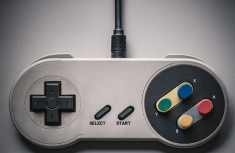

Como Jogar
Fases vermelhas, amarelas e saídas secretas
Um detalhe que pode passar despercebido no início é que Super Mario World dá uma pequena dica visual quando suas fases têm mais de uma saída. No mapa do mundo do jogo, que dá acesso às fases, é possível ver que alguns estágios têm cores diferentes. As fases amarelas são as mais simples, que possuem apenas uma saída, enquanto as que piscam em vermelho são as que possuem duas ou mais saídas. As Ghost Houses também costumam ter mais de uma saída, porém não têm indicação visual disso e exigem mais exploração.

Gameplay
Super Mario World é um jogo de plataformas 2D onde o objetivo é alcançar o Giant Gate antes que o tempo acabe. Mario ou Luigi pode saltar sobre plataformas, derrotar inimigos pisando neles, e usar habilidades como girar para destruir blocos. O jogador pode pegar e carregar itens pelo nível, além de nadar rapidamente enquanto segura objetos debaixo d'água. Ao tocar na barra móvel do Giant Gate, Mario ganha pontos de estrela que, ao somar 100, permitem jogar um minijogo para ganhar vidas extras. Alguns níveis contêm um Midway Gate que transforma Mario em Super Mario e serve como ponto de verificação. Power-ups são obtidos ao acertar blocos, como o Super Mushroom que transforma Mario em Super Mario, ou a Cape Feather que oferece novas habilidades. Mario pode armazenar itens extras e, se for danificado, o item de reserva é ativado automaticamente. Yoshi, um novo personagem, aparece em certos blocos e pode ser montado por Mario, oferecendo habilidades únicas.
Se Mario for tocado por um inimigo ou obstáculo enquanto está na forma normal, ele perde uma vida, mas se estiver em uma forma de power-up, reverte para a forma normal. A perda de todas as vidas resulta em Game Over, mas o jogador pode continuar do último salvamento. Certos obstáculos, como poços, lava e ser esmagado, derrotam Mario instantaneamente. O jogo apresenta um sistema de mapas mundiais com níveis interconectados e vários caminhos, criando um mapa menos linear. Mario precisa derrotar chefes como os Koopalings, filhos de Bowser, para avançar. Uma vez derrotados, os castelos dos chefes são destruídos, embora possam ser re-jogados nas versões internacionais.
Operações Básicas do Mario
Correr e Acelerar
Use os botões direcionais direito e esquerdo para movimentar o personagem, se movimentar com o personagem segurando Y no controle (nintendo) o personagem acelera na direção indicada. Os direcionais para cima e para baixo além da movimentação tambem pode utilizar para subir obstaculos como escadas por exemplos.
Saltar
Pressione o botão de pulo (geralmente A ou B, dependendo do controle) para fazer o Mario saltar sobre plataformas, inimigos e obstáculos.
Girar e Destruir Blocos
Ao pressionar o botão de salto no ar, Mario pode girar e destruir certos tipos de blocos e inimigos.
Pegar e Carregar Objetos
Quando próximo a itens especiais, como blocos com itens ou power-ups, pressione o botão de ação para pegá-los (como Y ou X) para pegar e segurar itens. Mario pode carregar esses objetos pelo nível enquanto mantém o botão pressionado.